Bain pump ASSY (4WD) removed |
| 1. Vane pump oil reservoir cover removed |
Remove the vane pump oil reservoir.
| 2. Power steering fluid |
| 3. Remove the front tire RH |
| 4. The engine Anda cover RH is removed |
Remove two bolts and two screws.
Remove the nut and remove the engine and cover RH.
| 5. Oxygen sensor is removed |
Cut the clamp and connector.
| 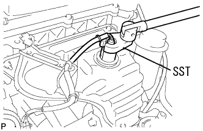 |
Use the SST to remove the oxyde ensenser.
| 6. Exhaust manifold Heat Insulator No.1 |
| 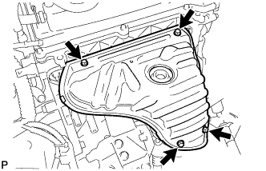 |
Remove the four bolts and remove the exhaust manifold heat insulator.
| 7. Front suspension cross member SUB-ASSY disconnection |
| 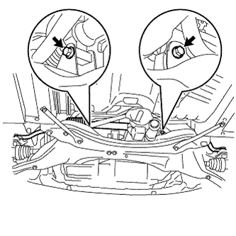 |
Remove the two bolts and disconnect the power steering gear ASSY W/Vane pump ASSY.
| 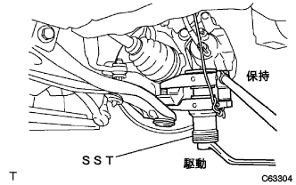 |
Remove the castle nut and use the SST to separate the ball joint of the rower arm from the steering knuckle.
 |
Remove the four bolts and remove the front suspension Menbarin Housing RH and LH.
| 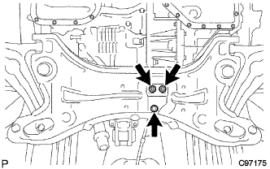 |
Remove two bolts and nuts and separate the engine mounting insulator RR.
 |
Support the suspension cross member in mission jacks.
Take the four bolts in the figure in the figure, and secure the gap between the exhaust pipe ASSY FR with the mission jack.
| 8. Exhaust pipe ASSY FR removed |
Remove two bolts and two springs and remove the exhaust pipe ASSY FR.
| 9. Remove the vane pump stay RR |
| 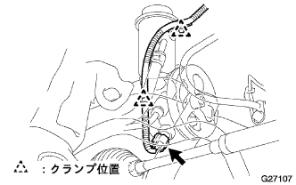 |
Cut the two clamps of the oil pressure sensor harness from the stayia and the oil reservoir assessy and separate the connector.
| 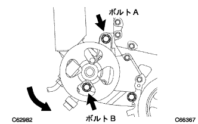 |
Loosen bolts A and bolt B, shift the vane pump ASSY to the engine side, and separate the V belt.
Temporarily tighten bolts A and bolt B, and fix the vane pump asser.
| 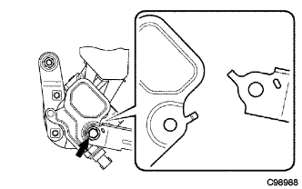 |
Remove the bolt and remove the stayia and heat insulator from the vane pump ASSY.
| 10. Purtive feed tube assigned |
| 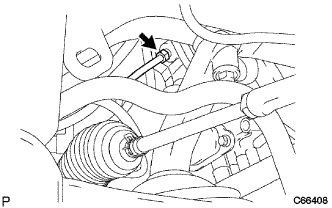 |
Use the Union Nut Wrenten 17 to separate the pressure feed tube ASSY.
| 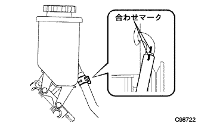 |
Put the clip, mark the match, and separate the hose No.1.
| 11. Vane pump ASSY |
Remove the bolt B and bolt C and remove the adjustment strut.
| 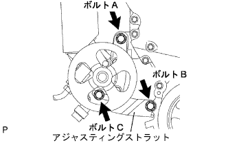 |
Remove the bolt A and remove the vane pump ASSY.